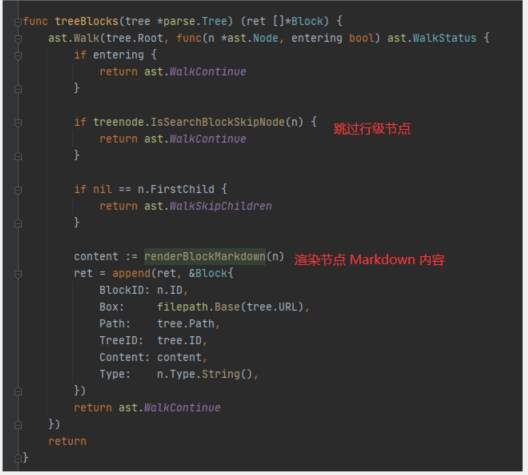

我提的一些 issues
思源笔记
BlockRef 没有触发自定义渲染器
公式块 id 没有渲染，标题 「id」是否应该换一种处理方式？
【渲染 bug】昨天更新的版本报错 Error: runtime error: slice bounds out of range
标题块渲染为 html 后丢失块 id 信息
使用 lute.MarkdownStr("", md_str) 得到的结果里面有 id 该怎么处理
开发帮助
Node 结构体渲染为 Markdown

我再尝试的时候遇到了一个问题，那就是我渲染出来的 ID 都是空不知道为什么